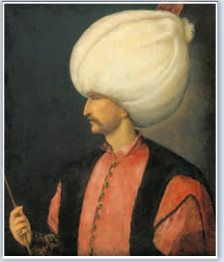
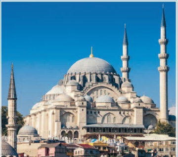
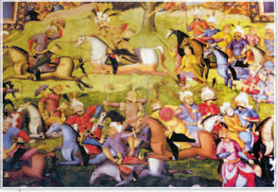
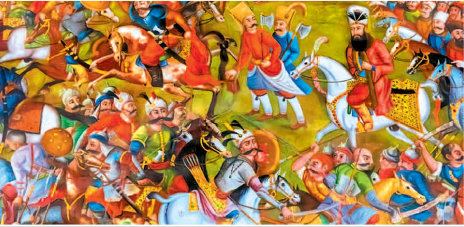
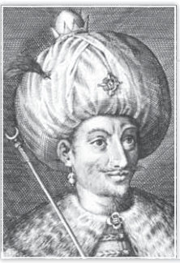

История Нового времени · 7 класс
§ 20. Османская империя и Иран: могущество и упадок
Две соседние державы долго боролись друг с другом. В XVI веке обе достигли большой силы, а затем столкнулись с трудностями. Разберёмся, как они были устроены, почему побеждали, что изменилось и как развивалась их культура.
Загадка параграфа
Почему соперничество было таким долгим?
Османская империя и Иран были соседями. Их правители хотели контролировать одни и те же земли. Вдобавок среди османов преобладали мусульмане-сунниты, а среди иранцев — мусульмане-шииты. Поэтому борьба за территорию сопровождалась религиозным противостоянием. Но история параграфа шире войн: чтобы понять её, нужно посмотреть на армию, власть, хозяйство и культуру обеих стран.
Пункт 1
Османские завоевания
К началу XVI века Османская империя уже занимала почти всю Малую Азию и почти весь Балканский полуостров. Её столицей стал Константинополь, который турки назвали Истанбулом. После победы над Византией султаны считали себя наследниками древней Римской империи.
Селим I повернул на восток
Султан Селим I Грозный правил в 1512–1520 годах. Он разгромил армию Ирана, завоевал Египет и взял под контроль Мекку и Медину — священные для мусульман города в Аравии. Это повысило его авторитет в мусульманском мире. За восемь лет его правления территория империи выросла вдвое.
Сулейман I повернул на запад
При Сулеймане I Великолепном (1520–1566) империя достигла наивысшего расцвета. В отличие от Селима, он направил главные усилия на запад. Его главным соперником стала держава Габсбургов. Османы завоевали почти всю Венгрию и в 1529 году осадили Вену, но взять город не смогли. Османские силы и признававшие власть султана алжирские пираты нападали на побережья Испании и Италии; тысячи людей попадали в плен и рабство.

Куда двигались правители
Здесь показаны направления главных походов и их результат, а не точные границы государств.
Главные походы — на запад
- ВенгрияЗавоевал почти всю страну.
- Вена · 1529 годОсадил город, но взять его не смог.
- Испания и ИталияПобережья разоряли османские силы и подчинённые султану алжирские пираты.
Главные походы — на восток
- ИранРазгромил иранскую армию.
- ЕгипетЗавоевал страну.
- Мекка и МединаВзял священные города под контроль.
Что получилось в других направлениях
- Чёрное море
- Османы установили над ним полный контроль.
- Нижняя Волга
- Продвинуться дальше не дала Россия: она уже присоединила Астраханское ханство.
- Индийский океан
- Закрепиться здесь не удалось: португальцы оказались сильнее.
Сулейман был не только завоевателем. Он возвращал владельцам ранее отнятые имения, защищал купцов от вымогательств и наказывал чиновников за произвол. При нём оформилась система управления огромной державой, а законы и указы, не относящиеся к шариату, были собраны в «Книге законов». При этом султан мог жестоко расправляться с теми, кто ему противостоял.
После Сулеймана османы ещё воевали с Ираном и европейскими государствами, но уже не стремились к завоеваниям прежнего размаха. Поражение флота при Лепанто нанесло удар по их славе. В 1683 году османы снова потерпели поражение под Веной. Они утратили Венгрию и другие земли, хотя сохранили обширные владения на Балканах.
Пункт 2
Как была устроена империя
Кто принимал решения
Во главе государства стоял султан. Его власть над подданными была огромной. Главным помощником султана был великий визирь — руководитель правительства. Он мог управлять делами от имени султана, издавать указы, командовать войсками и подписывать мирные договоры. Если султан был слабым правителем, визирь фактически руководил страной.
Главной резиденцией султанов был дворец Топкапы в Истанбуле. Там заседал диван — совет влиятельных сановников. Дипломаты называли османское правительство, а затем и саму империю Портой: название произошло от ворот, ведущих к помещениям чиновников и дивана.
Народы, налоги и армия
В империи жили разные народы, в том числе славяне Балканского полуострова. Перед верховной властью все подданные были бесправны, но представитель любого народа мог сделать карьеру и занять высокую должность. Рабы служили не только в армии, но и в государственном управлении; некоторые становились великими визирями.
Покорённые христиане платили более тяжёлые налоги, чем мусульмане. Принятие ислама освобождало от части налогового бремени, но власти редко обращали людей в ислам силой: тогда казна потеряла бы налоговые поступления. Поэтому многие христианские народы сохранили свою веру, язык и обычаи. Славяне пытались освободиться от османской власти, однако без внешней помощи эти попытки терпели поражение.
Огромную армию содержали за счёт военной добычи и налогов с покорённых народов. Основой конницы были османы. Особые пехотные части составляли янычары. Для их подготовки из христианских деревень забирали мальчиков, воспитывали их в исламе и преданности султану. Из таких воспитанников выходили также чиновники. В учебнике этот принудительный набор назван «налогом кровью».
Османов называли «пороховой империей»: сильная артиллерия и пехота с ручным огнестрельным оружием долго давали им преимущество. Но в XVII веке европейские армии быстро менялись, а османские артиллерия и войско постепенно устаревали.
Почему началось ослабление
С конца XVI века успехи в войнах уже не покрывали огромные военные расходы. Население росло быстрее, чем хозяйство. Торговые пути смещались из Средиземного моря на океаны; ущерб нанесла и «революция цен», о которой говорит учебник. При дворе усилились коррупция и борьба за влияние. Янычары вмешивались в назначение и свержение визирей и даже султанов. Приказы центра хуже выполнялись, отдельные области стремились действовать самостоятельно, вспыхивали восстания.
Пункт 3
Расцвет османской культуры
Время Сулеймана I было временем расцвета культуры. Она соединяла традиции османов и покорённых народов. Развивались литература, каллиграфия — искусство красивого письма, книжная миниатюра, изготовление ковров и керамики, а также астрономия и техника.
Особенно заметен этот расцвет в архитектуре. В империи строили мечети, медресе, дворцы, мосты, бани, рынки и другие здания. Прославился архитектор Синан. В молодости он был янычаром, затем военным инженером и строителем мостов, а позже стал главным архитектором султана. Он изучал византийский храм Святой Софии, уже превращённый в мечеть, и стремился создать большие османские мечети, соединяя освоенный строительный опыт с исламским оформлением интерьеров.

Пункт 4
Иран и начало династии Сефевидов
В XVI–XVII веках Иран, который тогда часто называли Персией, снова стал сильной державой. Его новым расцветом правила династия Сефевидов. Её основатель, шах Исмаил I, начал править в 1501 году и распространил свою власть от границ Турции до реки Инд. Шах — титул иранского правителя.

Исмаил хотел стать вождём всех мусульман и бросил вызов Османской империи. Державы спорили из-за Месопотамии и других земель. Месопотамия была особенно важна шаху из-за расположенных там шиитских святынь. К борьбе за земли добавилось различие в вере: среди османов преобладали сунниты, среди иранцев — шииты. Оба течения относятся к исламу, но противостояние между державами от этого стало ещё острее.
В 1514 году войска Селима I разбили армию Исмаила на Чалдыранском поле. Учебник объясняет успех османов численным перевесом и сильной артиллерией. Иранцы больше полагались на конницу и недооценили пушки. Поражение не закончило соперничество: с него началась долгая борьба Ирана и Турции.

Пункт 5
Как Аббас I усилил Иран — и что случилось потом
Когда шах Аббас I Великий пришёл к власти в 1587 году, Ирану угрожали с двух сторон: османы с запада и кочевые узбеки с востока. Воевать одновременно с обоими противниками было трудно. Поэтому Аббас заключил мир с османами, уступив им много земель. Это дало ему время справиться с угрозой на востоке и изменить своё государство.

Армия, управление, налоги
Аббас сохранил старые отряды знати и крестьянское ополчение, но создал и новые части по османскому и европейскому образцам. Появились пехотинцы из обращённых в ислам христиан, мушкетёры с ручным огнестрельным оружием и сильная артиллерия. Теперь Иран тоже стал «пороховой империей»: пушки и огнестрельное оружие заняли важное место в его армии.
Шах заменил местных знатных правителей в областях чиновниками, которых назначало государство. Многие налоги он снизил или отменил. Это помогло хозяйству: развивались торговля и добыча полезных ископаемых. Некоторые богатые области стали землями самого шаха. В учебнике они названы «шахским доменом»: доходы с этих земель шли на содержание армии.
Зачем были нужны реформы
Когда Аббас победил узбеков, он смог снова бороться с османами. В этих войнах Иран подчинил большие области Закавказья и на время вернул часть Месопотамии с шиитскими святынями. Новая армия и более надёжные доходы помогли шаху вести эту борьбу. Так внутренние изменения оказались связаны с внешней политикой.
Аббас поддерживал отношения с европейскими государствами и Россией: правители были заинтересованы в торговле и в противодействии османам. При дворе шаха бывали иностранные послы. Иран отправлял посольства и в Россию; в учебнике рассказано о подаренном Борису Годунову троне. Однако вовлечь Россию в войну с Турцией не удалось: началось Смутное время.
Исфахан и позднейший упадок
Аббас перенёс столицу в Исфахан. Новые кварталы строили по заранее продуманному плану вокруг большой площади. Современников поражали улицы, мосты, дворцы, мечети, парки и базар. В городе изготавливали персидские ковры и развивали искусство миниатюры. Расцвет столицы показывал силу государства и богатство его культуры. При этом правление Аббаса не было мягким: он жестоко подавлял сопротивление и насильственно переселил тысячи армян и грузин.
После смерти Аббаса в 1629 году держава Сефевидов постепенно слабела. Её новые правители уделяли управлению меньше внимания. Между Ираном и Турцией установилось равновесие сил, и их длительная борьба затихала. Торговые привилегии, данные европейцам, со временем уменьшали государственные доходы Ирана. В середине XVII века свободно торговать здесь смогли и русские купцы; отношения осложняли набеги казаков, в том числе поход Степана Разина на прикаспийские области.
Последний правитель из Сефевидов резко повысил налоги. Крестьяне разорялись, в городах и покорённых областях происходили восстания. В начале XVIII века афганские отряды свергли власть Сефевидов.
Перед тестом
Что стоит удержать в памяти
Главные даты
Слова и люди
| Султан, шах | Правитель Османской империи; правитель Ирана. |
| Великий визирь, диван | Главный помощник султана и руководитель правительства; совет сановников при султане. |
| Порта | Название османского правительства, а затем и всей империи, возникшее от названия дворцовых ворот. |
| Роксолана | Жена Сулеймана I, участвовавшая в борьбе за престол для своего сына Селима. |
| Янычары | Лучшие пехотные части османской армии, в значительной мере сформированные из отобранных у христианских семей мальчиков. |
| Шахский домен | Богатые земли, доходы с которых Аббас I направлял на содержание армии. |
| Сефевиды | Династия, при которой Иран вновь достиг могущества. |
| Синан | Прославленный османский архитектор. |
| Исмаил I, Аббас I | Основатель державы Сефевидов; шах, реформировавший армию и управление. |
Чтобы запомнить смысл, а не только имена, попробуй объяснить вслух три связи: почему османы долго побеждали; как реформы Аббаса помогли ему бороться с врагами; отчего обе державы позже ослабели.
Как читать источник в конце параграфа
Польский посол пишет, что после Сулеймана чиновники получали должности за деньги, набор янычар проводился небрежно, а за взятки начальники прощали проступки. Это взгляд участника эпохи, а не полный список причин упадка. Сопоставь его слова с объяснением выше: какие трудности он заметил в управлении и войске? Какие другие трудности называет сам учебник?
Проверь себя
Тренировка по всему параграфу
Точных вопросов школьного теста мы не знаем. Эти задания проверяют факты и связи из учебника. Сначала ответь сама; после выбора появится короткое объяснение. Если ошиблась, можно выбрать другой вариант.
1. Чем прежде всего различались завоевания Селима I и Сулеймана I?
2. Какой город османы осадили в 1529 году, но не взяли?
3. Кто был правой рукой султана в управлении империей?
4. Что такое диван в этом параграфе?
5. Какую роль в османской армии играли янычары?
6. Почему Османскую империю называли «пороховой»?
7. Чем прославился Синан?
8. Почему Иран и Османская империя ожесточённо соперничали?
9. Что показала битва на Чалдыранском поле?
10. Зачем Аббас I сначала заключил невыгодный мир с османами?
11. Какая перемена помогла Аббасу успешнее воевать с османами?
12. Какой город стал столицей Ирана при Аббасе I?
13. Почему Османской империи стало труднее удерживать прежнюю силу?
14. Что особенно обострило кризис Ирана в конце власти Сефевидов?
15. Какой порядок событий из задания учебника верный?
16. На какую проблему указывает польский посол в источнике в конце параграфа?
Проверь связи между событиями
После теста попробуй устно ответить без вариантов: почему реформа армии Аббаса помогла ему отвоёвывать земли? Почему прекращение крупных побед стало проблемой для Османской империи? Какие причины соперничества Ирана и османов действовали одновременно?